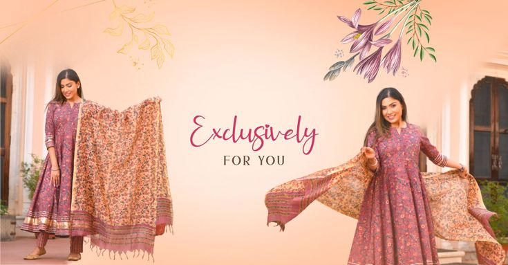
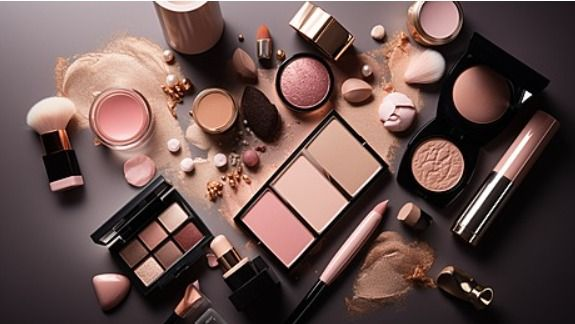

This Blog website is all about Fashion and Beauty Products
Fashion and beauty are powerful forms of nonverbal communication and creative expression, serving as a visual language through which individuals construct and convey their identity, mood, and cultural affiliations. Fashion, centered on the adornment and styling of the body through clothing and accessories, reflects the zeitgeist of an era, constantly evolving through a dynamic interplay between designers, street style, and societal shifts. Beauty, encompassing skincare, cosmetics, and grooming, is equally subjective and culturally bound, focusing on enhancement, self-care, and the artistry of presentation. Together, they form a vast, influential industry that not only shapes and reflects personal confidence but also acts as a significant cultural and economic force, chronicling social change and offering a tangible means for storytelling and self-discovery.
Contemporary fashion in 2026 is characterized by a dynamic and intentional shift toward personal expression, moving away from fleeting micro-trends in favor of curated individuality . This season, the runways and streets celebrate a powerful juxtaposition of bold, emotional colors like royal purple and transformative teal against the reassuring comfort of textured fabrics and sculpted silhouettes . Designers are reimagining classic codes, with sporty elements merging seamlessly with couture, heritage techniques being given a modern platform, and sharp tailoring adopting an architectural, almost protective quality . Ultimately, being "trendy" today is less about conformity and more about confidently mixing these elements—perhaps a romantic sheer layer with utilitarian cargo pants or a traditional drape with contemporary structure—to create a look that feels both grounded and distinctly one's own

The landscape of Pakistani beauty products is undergoing a vibrant transformation, moving beyond traditional household names to embrace a modern identity rooted in heritage, innovation, and global ambition . Consumers are increasingly gravitating toward brands that blend ancestral wisdom—like the use of *ubtan*, rose water, neem, and saffron—with scientifically-informed, chemical-free formulations . This shift is propelled by a new wave of homegrown enterprises, from organic pioneers like **Conatural** and **Clairvoyant** to heritage-based lines like **Saeed Ghani**, all competing strongly with international giants by offering clean, cruelty-free, and locally-relevant solutions . The market is now rich with diversity, featuring affordable everyday staples from brands like **Medora** and **Rivaj** alongside premium, halal-certified cosmetics from names like **Masarrat Misbah** and **J. Makeup** . This momentum is not confined to local shelves; with a strong showing at international events like Beautyworld Middle East 2025 and exports to regions like the UAE and Europe, Pakistani beauty brands are successfully positioning "Made in Pakistan" as a symbol of purity, affordability, and quality on the world stage .
